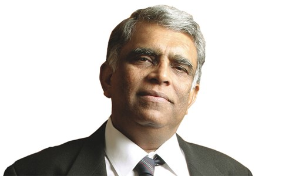
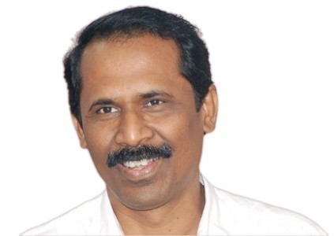

Correspondent's message

In a country where education is held in very high esteem and the teacher is equated to God, we at Rajalakshmi Engineering College have dedicated ourselves to impart education and develop the student to be a responsible engineer and individual. Students of Rajalakshmi Engineering College are groomed carefully and the virtues of hard work, discipline and ethical practices in profession are imbibed in them constantly during their campus life. Campus life here stresses the importance of extra academic activities apart from academic learning, leading them to many new avenues. All these go a long way in making our student a thoroughbred professional, eminently suited to contribute in his chosen career with an ever open mind for new thoughts and ideas in industrial and technological advancements. We are hence confident that our students equipped with such capabilities will emerge as valuable contributory assets to the development of the organizations they serve as well as to the nation.
Principal

Dr. S.N. Murugesan, Principal, is an accomplished academician and administrator with a specialization in thermal sciences, particularly vapour absorption systems and heat transfer. With 25 years of teaching experience and a Ph.D. from Anna University, he has made significant contributions to engineering education. He has published 12 research papers and served in various academic and administrative roles, including as head of departments in India and Oman. His involvement in committees such as the UGC and Anna University's board of studies highlights his role in shaping educational policies. Dr. Murugesan's commitment to bridging the gap between academia and industry is evident through his consultancy work and guidance of Ph.D. scholars, fostering the next generation of experts in mechanical engineering. His leadership extends to various committees and boards, emphasizing his influence in academic circles. Under his mentorship, many young researchers have thrived, contributing to the field's growth. His career exemplifies a blend of theoretical expertise and practical application, making him a distinguished figure in engineering education.